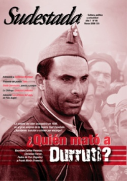

Buscar
Versos de puertas abiertas
Hace 31 años arrancaban de su hogar al poeta-herrero Dardo Dorronzoro, formador de jóvenes y amante de la vida. Inmenso enemigo del régimen era aquel hombre de 63 años que tenía la pava siempre lista, la puerta abierta y los versos ardientes. Testimonios de sus amigos y compañeros, y un fragmento de una novela inédita.
Edición N° 66
Marzo 2008
Revista bimensual
Comprar edición impresaSumario
- Una bala para Durruti
- Unidad y divergencia
- Confesiones de un ilusionista
- El mundo es redondo y de parches
- Voces de resistencia II
- Versos de puertas abiertas
Compartir Articulo
Cuando Dardo Dorronzoro caminó entre fusiles ese 25 de junio de 1976, no era la primera vez. Ya había sido arrancado de su casa- taller situada en el barrio La Loma1 de Luján unos meses antes. A principios de marzo de 1976, antes de que Videla y su banda de asesinos irrumpieran en el poder, ya actuaba en la zona una brigada denominada Bruno Genta2. Conformada por personal del Regimiento 6 de Infantería del área 115 de Mercedes, la brigada había amenazado primero y secuestrado después a una decena de militantes lujanenses3, liberándolos tiempo después. En las paredes, la leyenda pintada con aerosol: "Casa de bolche", será el rastro del paso de los represores.
A pesar de las amenazas, de las listas negras pegadas en la noche encubridora de la ciudad como oscura advertencia, de su primera desaparición, de la destrucción de parte de sus libros, Dorronzoro eligió quedarse. No era ignorante del riesgo ni de la brutalidad de los enemigos, sabía que las palabras verdaderas, aquellas que se transforman en banderas de los oprimidos, son un peligro real para los hacedores de injusticias. Sus vecinos, la familia Monzón, aún recuerdan esa noche de marzo, cuando irrumpieron en el barrio: "La madrugada que se llevaron a Dardo por primera vez sentimos terror; por la ventana vimos a los tipos encapuchados, a Nelly (su compañera) la dejaron con la cara cubierta; nosotros entramos después de un rato largo y Nelly estaba sentada con la capucha en la mano llorando, las paredes y la vereda escritas. (...) Dardo apareció al tiempo, por el lado de Junín y nos contó que les hacían simulacros de fusilamiento y que les decían que se tenían que ir del país". Los versos encontrados por su compañera en la máquina de escribir de Dardo, luego de su segunda desaparición forzada, constatan que preveía lo que se cernía sobre sus vidas: "Desde hace tiempo siento la amenaza/ de ese viento sobre/ la luz de mi lámpara, sobre esa luz que apenas/ me alcanza para no perderme/ entre las garras del mundo, entre los dientes/ de esa inmensa muchedumbre de los lobos en la sombra".
Nació en San Andrés de Giles en 1913, en el seno de una numerosa familia socialista que termina recalando en Luján a causa de las presiones por sus ideas políticas, lo que les genera un aislamiento que llegaba al extremo de no conseguir fiado en el almacén del barrio.
Entonces Dardo comenzó a acumular experiencia militante acompañando a los fundadores del Partido Comunista en Luján, aunque no tendrá una participación orgánica dentro de la estructura partidaria. Viejos compañeros aún recuerdan como en la calle San Martín, de manera imprevista, comenzaban con la agitación al grito de "¡Viva la libertad, abajo el fascismo!". Eran tiempos de la Guerra Civil Española y las discusiones circundaban todas las ciudades.
De oficio herrero, trabajaba en su taller todas las mañanas. Por las tardes mutaba en poeta, ya no se acercaba al yunque; las palabras se hacían dueñas de su tiempo: la narrativa, la poesía y los textos periodísticos serán una de las tantas maneras en que sus palabras tomarán forma, recorrerán el tiempo y llegarán a manos de aquellos que, como él, juntaban ansiedades y broncas, odios y rebeldías, sin tiempo que perder, con el hambre urgente. Los versos de Dardo son comprendidos por todos porque hablan el idioma del jornalero, del hombre común que se desloma a diario. Dice su vecino Monzón: "No te cansabas de hablar con él. Era un libro abierto, muchas de las cosas que él nos decía sobre el país pasaron, de cómo nos iban a dominar...".
En sus versos, Dardo le escribe al Che y desafía a sus matadores, le escribe al Chile ensangrentado (anunciando la llegada de la sangre más pura) y les moja la oreja a los hacedores de versos bonitos, intelectuales al servicio del sistema de opresión, de injusticia; aquellos que se esconden detrás del púlpito de una cátedra. Su poesía está escrita para los otros; sacando a la luz aquellas suciedades que los señores de bien quieren ocultar. Por eso mismo, los obreros explotados tendrán un lugar central en su obra.
El poeta-herrero era una síntesis de su tiempo, uno más de tantos que reclamaban forjar, desde todos los espacios, una vida, una cultura que tomara como centro al hombre vilipendiado por el sistema opresor, que hablara con sus propias palabras. No era el único que se conmovía, que pensaba en lo colectivo. Creía que la única forma de transformación era a través de lo político. Intentaba aportar a la generación un discurso propio de la clase obrera.
"Dolor en las uñas, dolor en las tripas, dolor en los hijos,/ nunca hemos tenido otra cosa,/ mejor dicho nos han tenido,/ mejor dicho nos tienen/ mejor tendríamos que hacer algo,/ mejor dicho no solamente tocar la guitarra,/ mejor dicho tendríamos que agarrar al mundo por las cuatro puntas/ mejor dicho agarrar el mundo y darlo vuelta para que caiga todo lo que no sirve,/ mejor dicho para que caiga toda la basura". "Vamos a ver" (fragmento)
Dardo se aleja de los supuestos méritos que intentan ofrecerle y rechaza pasar al cine su obra premiada La nave encabritada, porque no aceptaba cambiar sus palabras. La fragua le daba lo necesario para vivir. Los golpes incansables en el taller se convertían en la asunción de una posición clara, firme, que lo colocaba en un lugar y en el que no cabían los supuestos honores ni los dineros que podía tener por su obra.
(La nota completa en la edición gráfica de Sudestada Nº66-Marzo de 2008)
Comentarios
Georgina Gabucci y Julián Sotelo
Articulos más vistos


LIBRERÍA SUDESTADA

Colección infantil

Distribuidora de Libros

Suscripción

Sudestada en URUGUAY

Otros articulos de esta edición
Una bala para Durruti
El enigma de la muerte del líder anarquista dispara siete conjeturas y ninguna certidumbre. Su muerte en Madrid significó el ...
El mundo es redondo y de parches
Desde El Palomar a las "llamadas" en Uruguay, La Chilinga transita su camino emparchado de buenos recuerdos, de mixturas y ...
Confesiones de un ilusionista
Juega con las cartas del género policial, del suspenso, del clima amenazante. Sus personajes siempre tienen algo que ocultar, sus ...
Voces de resistencia II
Un acercamiento a los problemas, reclamos y desafíos del pueblo toba en la región chaqueña. La convivencia diaria con la ...